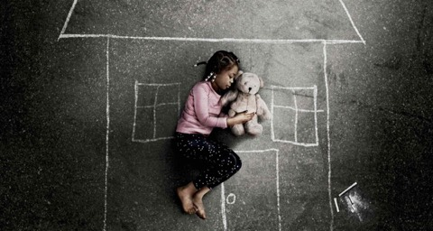

Panel · Double Exposure 2023
Locked Out: Post Screening Reception
Thursday, November 2, 2023 · 9:15pm–11:30pm · Hotel Monaco
Opening Night Reception at the Hotel Monaco’s restaurant, Dirty Habit.
Films discussed

Locked OutKate Davis, Luchina Fisher2023 · 78 min